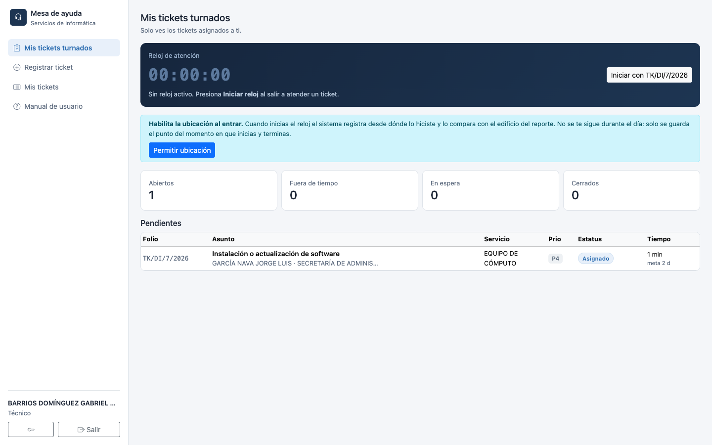
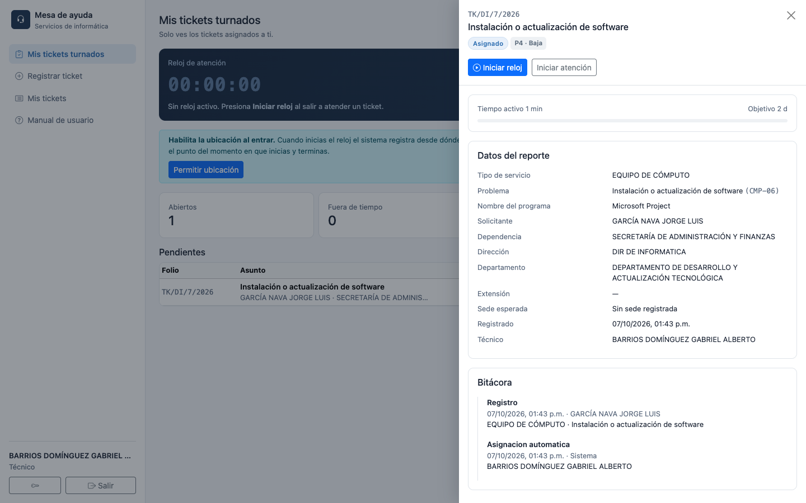
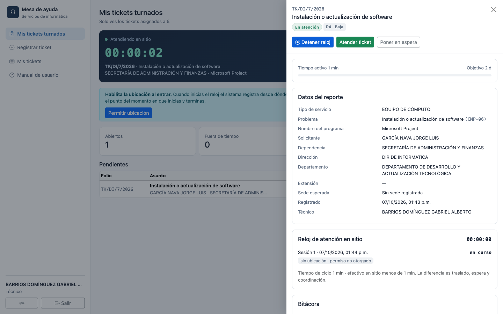
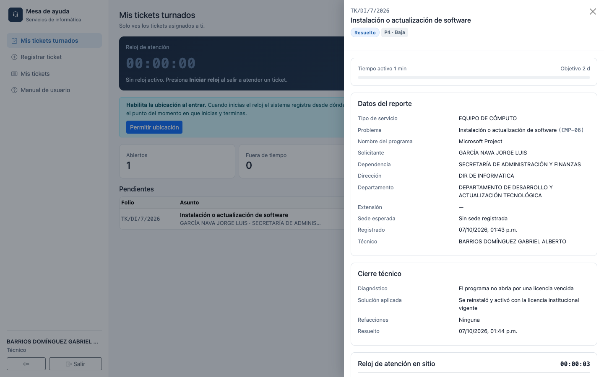
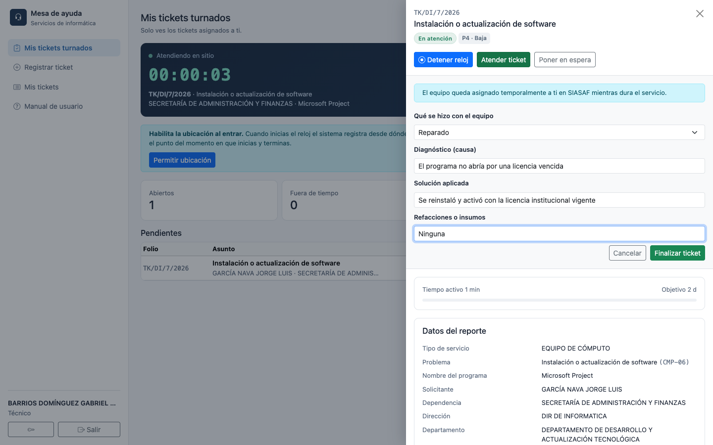
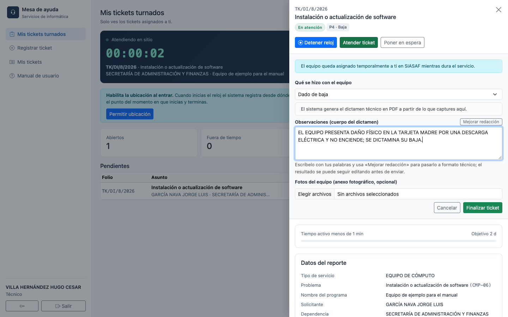

Cómo atender un ticket, el reloj checador y el proceso de bienes
Secretaría de Administración y Finanzas · Congreso del Estado de México
Contenido
Tu bandeja de tickets turnados
Iniciar la atención y el reloj checador
Marcar un ticket como resuelto
Equipo de cómputo: reparado o dado de baja
Poner un ticket en espera
Otras acciones disponibles
Preguntas frecuentes
TÉCNICO
1 Tu bandeja de tickets turnados
La asignación de tickets es automática: el sistema te los turna según tu especialidad y tu carga de trabajo. No eliges qué atender de una lista general — "Mis tickets turnados" es lo que te toca.

«Mis tickets turnados»: arriba, el reloj checador; abajo, tus pendientes y tus abiertos vs. fuera de tiempo.
Desde aquí ves de un vistazo cuántos tickets tienes abiertos y cuántos ya están fuera de tiempo (pasaron su objetivo de atención). Da clic en cualquier renglón de la lista de pendientes para abrir el detalle.
2 Iniciar la atención y el reloj checador
El reloj registra el tiempo real que pasas atendiendo en sitio. No es solo un cronómetro: también sirve para que el sistema sepa cuándo empezaste a trabajar en el ticket.

Ticket recién turnado (estatus Asignado): el botón principal es Iniciar reloj.
Abre el ticket y da clic en Iniciar reloj.
Si el navegador te lo pide, permite el acceso a tu ubicación — el sistema registra desde dónde empezaste a atender. Si no das el permiso, el ticket se sigue procesando igual, solo queda anotado "sin ubicación".
El estatus del ticket cambia automáticamente a En atención en cuanto arranca el reloj — no es un paso aparte.

Con el reloj corriendo: cronómetro en vivo, y ya puedes usar Atender ticket / Marcar resuelto y Poner en espera.
El reloj es obligatorio para cerrar
No puedes marcar un ticket como resuelto (ni atenderlo, en el caso de Equipo de cómputo) si el reloj no está corriendo. Si saliste a atender el reporte y se te olvidó iniciarlo, ábrelo en cuanto puedas — igual puedes "Detener reloj" y volver a "Iniciar reloj" cuantas veces haga falta dentro del mismo ticket.
3 Marcar un ticket como resuelto
Para la mayoría de los servicios (Internet, Correo institucional, Impresoras, Telefonía…), cerrar el ticket es un solo formulario.
Con el reloj corriendo, da clic en Marcar resuelto.
Captura el Diagnóstico (qué estaba fallando) y la Solución aplicada (qué hiciste).
Envía el formulario. El ticket pasa a estatus Resuelto y queda a la espera de que el solicitante lo confirme.

Ticket ya resuelto: el bloque «Cierre técnico» muestra el diagnóstico y la solución que capturaste.
El ticket no se cierra solo
Que tú lo marques como resuelto no lo cierra todavía — el solicitante debe confirmar que de verdad quedó bien. Si no está de acuerdo, puede rechazarlo y regresa a ti. Si no contesta en 3 días, el sistema lo cierra automáticamente.
4 Equipo de cómputo: reparado o dado de baja
Para el servicio EQUIPO DE CÓMPUTO el botón no dice "Marcar resuelto" sino Atender ticket, porque hay dos resultados posibles y uno de ellos involucra al equipo mismo, no solo al ticket.
4.1 Si el equipo se reparó
Con el reloj corriendo, da clic en Atender ticket.
En "Qué se hizo con el equipo" elige Reparado.
Captura diagnóstico, solución aplicada y, si usaste refacciones o insumos, descríbelos (si no usaste ninguna, se guarda "Ninguna").
Da clic en Finalizar ticket.

«Atender ticket» con resultado Reparado: diagnóstico, solución y refacciones.
4.2 Si el equipo se da de baja
Cuando el equipo no tiene reparación, el procedimiento es distinto porque el sistema genera un Dictamen Técnico oficial en PDF a partir de lo que captures, y ese documento es el respaldo formal de la baja ante el área de Bienes Muebles.
En "Qué se hizo con el equipo" elige Dado de baja.
Redacta las Observaciones: la falla encontrada, el diagnóstico y por qué se dictamina la baja. Esto se imprime tal cual en el dictamen (sección "II. DICTAMEN").
Si quieres, usa el botón Mejorar redacción para que el sistema pase tu texto a formato técnico formal, sin inventar datos que no hayas dado. El resultado se puede seguir editando antes de enviar.
Adjunta fotos del equipo si las tienes (quedan como anexo fotográfico del dictamen; son opcionales).
Da clic en Finalizar ticket.

«Atender ticket» con resultado Dado de baja: observaciones (cuerpo del dictamen) y fotos opcionales.
El equipo queda asignado temporalmente a ti
Al atender un ticket de inventario, el sistema avisa a SIASAF que el equipo está contigo mientras dura el servicio (igual que cuando lo retiras físicamente para revisarlo). Al finalizar el ticket — reparado o dado de baja — esa asignación temporal se cierra sola.
¿Dónde queda el dictamen?
El PDF generado queda disponible para descargar desde el propio ticket (botón "Ver dictamen"), y el administrador puede consultar todos los equipos dados de baja, con su número de inventario y el enlace al dictamen, en Equipos dados de baja dentro del menú de administración.
5 Poner un ticket en espera
Si necesitas pausar un ticket (por ejemplo, esperando una refacción, una autorización, o porque vas a retirar el equipo para revisarlo), usa Poner en espera y elige el motivo correspondiente.
El tiempo que el ticket pasa en espera no cuenta contra el objetivo de atención — la causa suele ser ajena a ti.
Si el motivo es "Retirar el equipo del lugar para su revisión" (solo Equipo de cómputo), el sistema genera automáticamente una cédula de retiro en PDF, como respaldo de que te llevaste el equipo.
Para continuar, abre el ticket de nuevo y usa Reanudar.
6 Otras acciones disponibles
Acción
Para qué sirve
Corregir datos
Ajustar el dato adicional del reporte (por ejemplo, el número de inventario) mientras el ticket está en espera — no cambia el problema ni la prioridad.
Registrar ticket
Tú también puedes registrar tickets, igual que un solicitante — por ejemplo, para reportar algo que detectaste tú mismo.
Imprimir
Genera una versión imprimible del detalle del ticket.
7 Preguntas frecuentes
¿Puedo atender un ticket que no está asignado a mí?
No. Solo el técnico asignado (o el administrador) puede iniciar el reloj, atender o resolver un ticket.
¿Qué pasa si el solicitante rechaza mi solución?
El ticket se reabre y regresa a ti con el motivo que haya capturado el solicitante, visible en la bitácora.
¿Por qué no puedo iniciar el reloj dos veces a la vez?
Cada sesión del reloj registra un inicio y un fin; si necesitas pausar y retomar, usa "Detener reloj" y "Iniciar reloj" de nuevo — cada tramo queda registrado por separado en "Reloj de atención en sitio".
¿El GPS tiene que ser exacto?
No. Es un indicador de calidad del dato, no de tu desempeño: un porcentaje bajo de ubicación casi siempre significa permiso no otorgado o mala señal dentro del edificio, no que no hayas asistido.